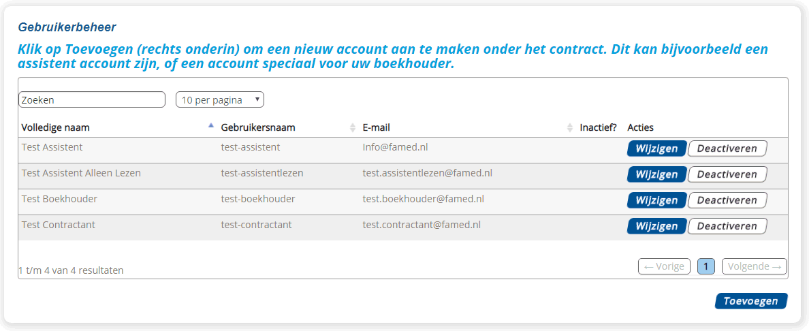
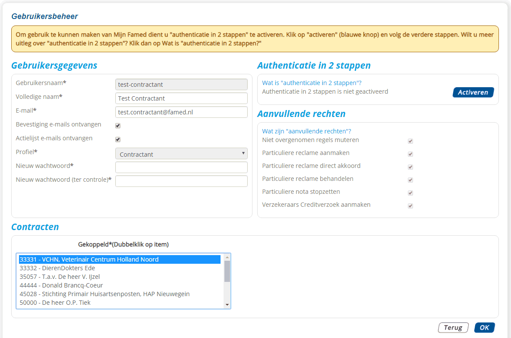
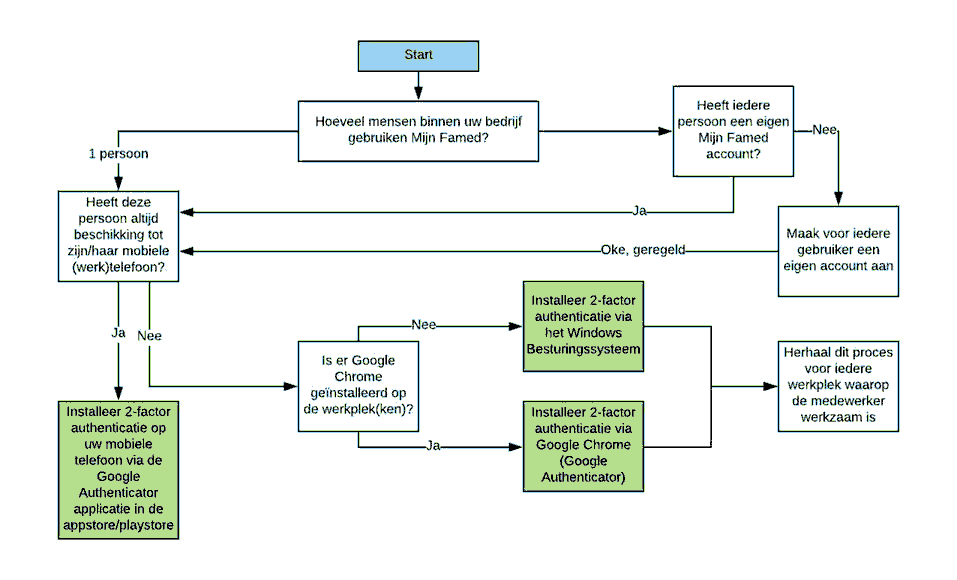
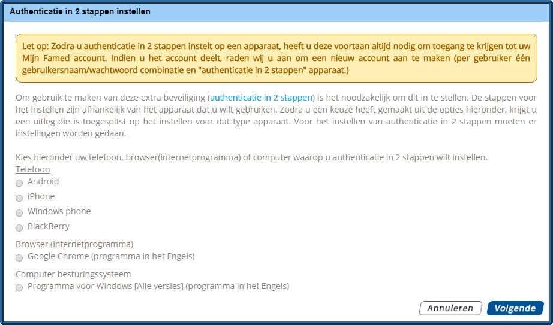

Wat is "authenticatie in 2 stappen"?
Authenticatie in 2 stappen betekent dat u naast een gebruikersnaam en wachtwoord een unieke code moet invoeren om toegang te krijgen tot uw Mijn Famed account. Deze code wordt iedere keer wanneer u inlogt, verstrekt via uw telefoon of computer. Door het toevoegen van deze procedure is uw Mijn Famed omgeving extra beveiligd.
Waarom deze procedure?
Door "authenticatie in 2 stappen" is de kans dat onbevoegde gebruikers toegang krijgen tot uw account en dat privacygevoelige informatie in verkeerde handen valt aanzienlijk kleiner. De reden hiervoor is dat een onbevoegd persoon naast uw gebruikersnaam en wachtwoord ook uw telefoon of computer nodig heeft om toegang te krijgen tot uw Mijn Famed account.
Hoe werkt de procedure?
Nadat u "authenticatie in 2 stappen" heeft geactiveerd, volgt u bij het inloggen de onderstaande stappen.
- 1
- U logt in op Mijn Famed met gebruik van uw gebruikersnaam en wachtwoord.
- 2
- U krijgt een tussenscherm te zien waar u een unieke code moet invoeren, deze ontvangt u via een applicatie op uw telefoon of internetbrowser (computer).
Authenticatie in 2 stappen instellen
Let op: Zodra u authenticatie in 2 stappen instelt op een apparaat, heeft u deze voortaan altijd nodig om toegang te krijgen tot uw Mijn Famed account. Indien u het account deelt, raden wij u aan om een nieuw account aan te maken (per gebruiker één gebruikersnaam/wachtwoord combinatie en "authenticatie in 2 stappen" apparaat.)
- 1
- Log in met uw gebruikersnaam en wachtwoord op Mijn Famed.
- 2
- Klik in de menubalk op "Uw gegevens".
- 3
- Selecteer de regel met de gebruiker waarvoor u authenticatie in 2 stappen wilt instellen.
 - 4
- Klik op "wijzigen".
- 5
- U krijgt het onderstaande scherm te zien, klik op "Activeren".
 - 6
- Kies uw telefoontype of apparaat waarop u de extra beveiliging wilt instellen.
(Let op: Het ingestelde apparaat heeft u in het vervolg altijd nodig wanneer u inlogt op Mijn Famed.)
Wilt u nagaan welk apparaat u het beste kunt gebruiken, volg de diagram hieronder:


- 7
- Vervolgens volgt u de instructies op het scherm. U krijgt afhankelijk van het door u gekozen apparaat een uitleg te zien.